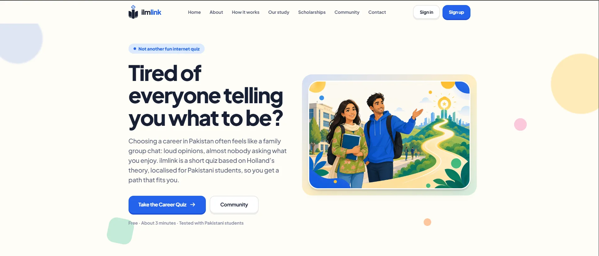
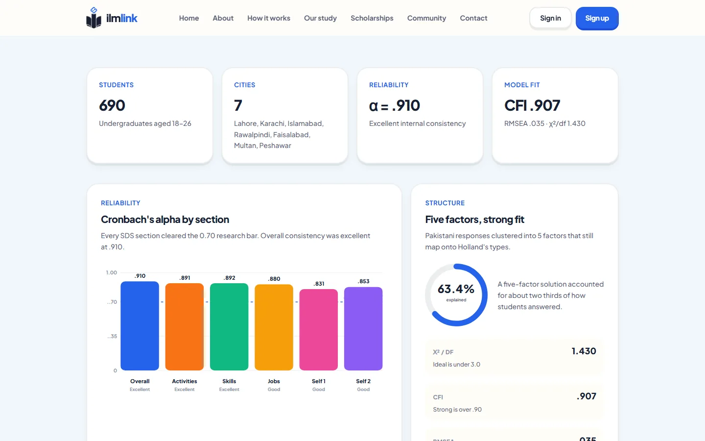
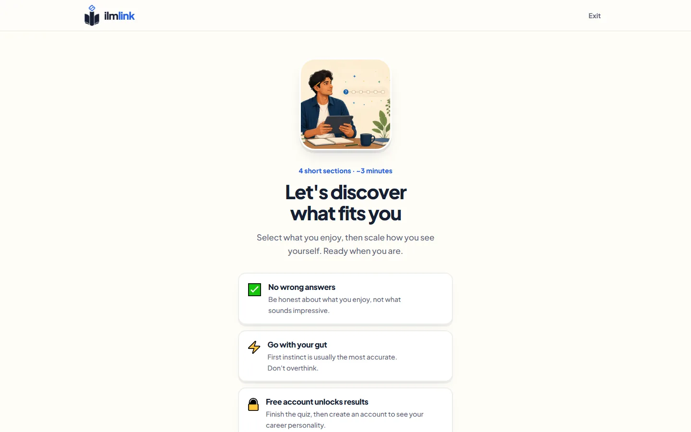
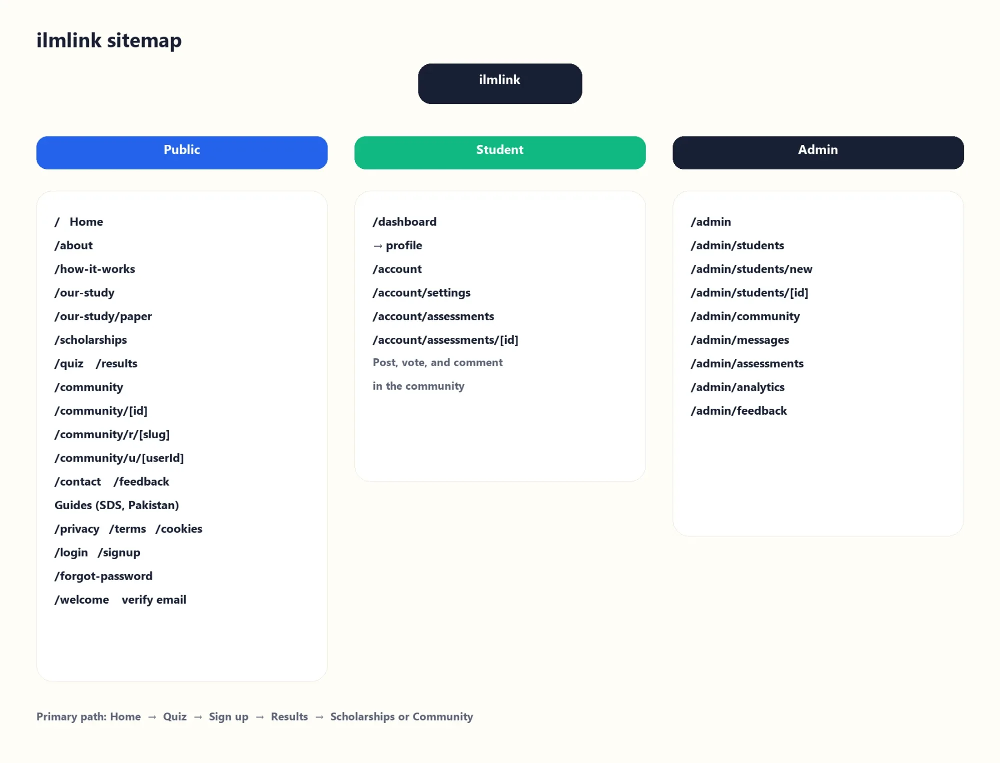
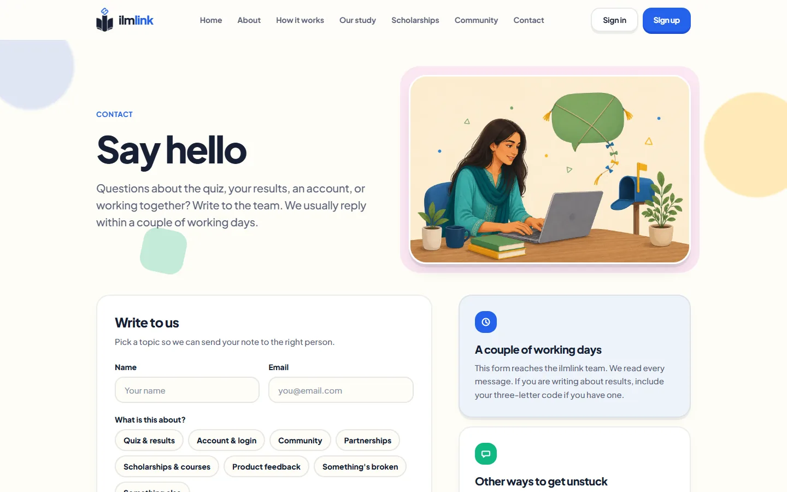

ilmlink
ilmlink is a short career quiz for students in Pakistan. In about three minutes it shows a student how they like to work and which directions suit them, before anyone hands them a degree to study. I built it at Times TX, on Node.js, from the quiz itself to the admin panel the team uses to run it.

The problem
Plenty of advice, no way to tell what fits
Picking a career in Pakistan often feels like a family group chat. Everyone has an opinion, and the same few paths keep coming up: medicine, engineering, accountancy. Very few people ask the student what they actually enjoy.
Times Consultant has guided Pakistani students on what to study and where for years. The missing piece came before that. Students had no starting point. Their interests stayed vague, they guessed at their strengths, and big decisions got made under pressure or put off.
The brief was a tool that shows a student a pattern in their own interests. It had to make sense in a few minutes, and it had to be careful enough that a student, or a parent, could trust it.
The idea
A compass, not a job title
ilmlink is built on Holland’s Theory of Career Choice. It sorts interests into six types:
- Realistic, the Doers
- Investigative, the Thinkers
- Artistic, the Creators
- Social, the Helpers
- Enterprising, the Persuaders
- Conventional, the Organizers
A student’s strongest three types make a three-letter code, such as SIA or IRC. The code points in a direction. It doesn’t lock anyone into a single job, and the product never promises “the one right career.”
The quiz follows the structure of the Self-Directed Search: activities you like, things you’re good at, jobs that appeal to you, and how you rate yourself. ilmlink is inspired by that structure. It isn’t the official SDS, and it doesn’t replace a certified career counsellor. The site says so plainly.
The research
Tested with Pakistani students first
Before ilmlink went to students, Times Consultant ran a psychometric study. The English Self-Directed Search was given to 690 undergraduates aged 18 to 26 in seven cities: Lahore, Karachi, Islamabad, Rawalpindi, Faisalabad, Multan and Peshawar.
The results held up. Every section cleared the 0.70 bar researchers use for reliability, and overall consistency was .910. The answers grouped into five factors that still map onto Holland’s types, and those five factors explained 63.4% of how students answered.
| Measure | Result | What counts as good |
|---|---|---|
| Cronbach’s alpha, overall | .910 | Above .70 |
| Activities / Skills / Jobs | .891 / .892 / .880 | Above .70 |
| Self-estimates 1 / 2 | .831 / .853 | Above .70 |
| CFI (model fit) | .907 | Over .90 |
| RMSEA | .035 | Lower is better |
| χ²/df | 1.430 | Under 3.0 |
I built the “Our study” page so students and parents can read these numbers on the site. Each figure sits next to a short line on what it means, and the full paper has its own page for anyone who wants the detail.

The quiz
Start first, sign up later
The most important flow decision was when to ask for an account. Asking up front would lose students before they had seen a single question. So nobody needs an account to start. A student takes the full quiz, and their answers stay on their own device. The account comes in at the end, as the step that opens the results, and the saved answers are attached to it once they sign in.
Before the first question, a short intro sets expectations: four short sections, about three minutes, no wrong answers, go with your first instinct, and a free account at the end to see the result. Students know what they are agreeing to before they begin.


The result
What a student gets at the end
A three-letter code
The student’s strongest three Holland types, in order.
Scores across all six types
So they can see how close the runners-up were, not only the winners.
A plain-language profile
A short description, in everyday language, of how they like to work.
Career directions
Fields that match the pattern, as places to start looking.
Results are saved to the student’s account. From the dashboard they can come back to any past assessment, open it again, and update their profile and settings.
What I built
Three areas in one app
The quiz is the front door, but most of the build sits around it. I worked through the app in three parts, matching the sitemap.
- Public siteHome, About, How it works, Our study and the full paper, Scholarships, Community, Contact and Feedback, guides on the SDS and on studying in Pakistan, and the legal pages. Sign-up, login, password reset, a welcome screen and email verification also live here.
- Student areaA dashboard with the student’s profile, account settings, and a list of saved assessments, each with its own detail page. Signed-in students can also post, vote and comment in the community.
- Admin areaA separate panel for the Times Consultant team. It covers students (list, add and individual records), community moderation, contact messages, assessments, analytics and feedback.
The community works like a set of small forums. Each topic has its own space, every member has a profile page, and posts collect votes and comments. Anyone can read it without an account, which lets a curious student look around before committing. Posting needs a free account.
The contact form asks the student to pick a topic first: quiz and results, account and login, community, partnerships, scholarships and courses, product feedback, something broken, or something else. The topic sends the note to the right person, and a student writing about results is asked to include their three-letter code, so the team can answer without a back-and-forth.

Stack
What I used
| Part | Tools |
|---|---|
| Application | Node.js ecosystem |
| Routing | Dynamic routes for assessments, community posts, communities, user profiles and admin student records |
| Accounts | Sign-up, login, password reset and email verification |
| Illustrations | Custom artwork for each page |
Outcome
A starting point students can trust
ilmlink is live at ilmlink.com. A student in Karachi or Peshawar can take a free three-minute quiz, get a three-letter code with a profile they can read, and leave with a few directions to look into. If they want more, scholarships and a student community are one step away.
For the Times Consultant team, the admin area keeps students, assessments, messages, community posts and feedback in one place.